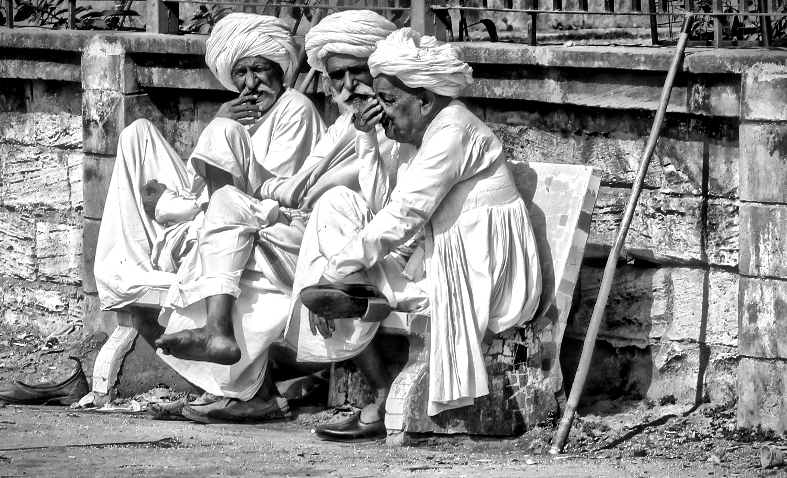
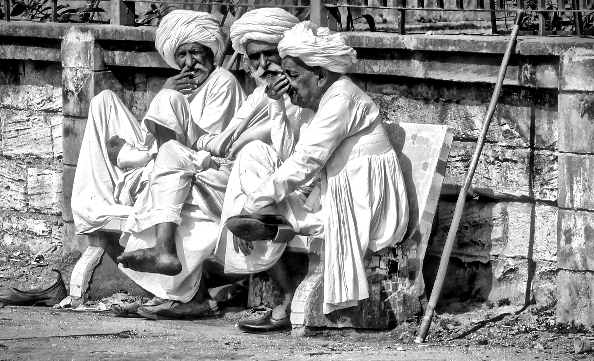

I'm a Los Angeles native, amateur photographer, front-end developer, musician and food enthusiast (in no particular order).
After graduating from the University of Southern California in 2010 with a Bachelor's in International Relations and a minor in Music Industry, I worked booking concerts for 3 years @ CAA before going digital.
Throughout my career, I've also held positions at Awesomeness TV, Facebook, and Whalerock Industries. Click here to see my full résumé.
The photographs you'll find here were taken all over the world using a Cannon Rebel EOS T2I.
Hope you enjoy them!